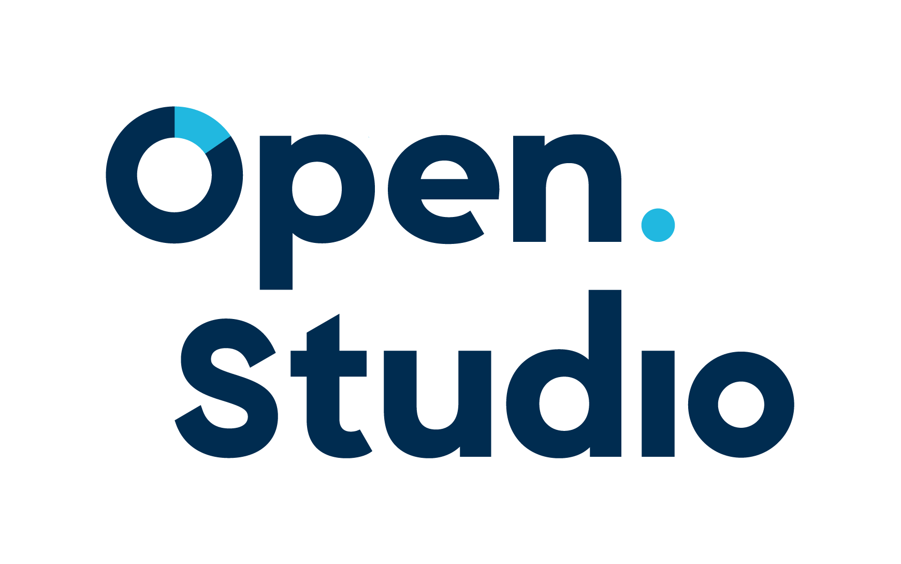
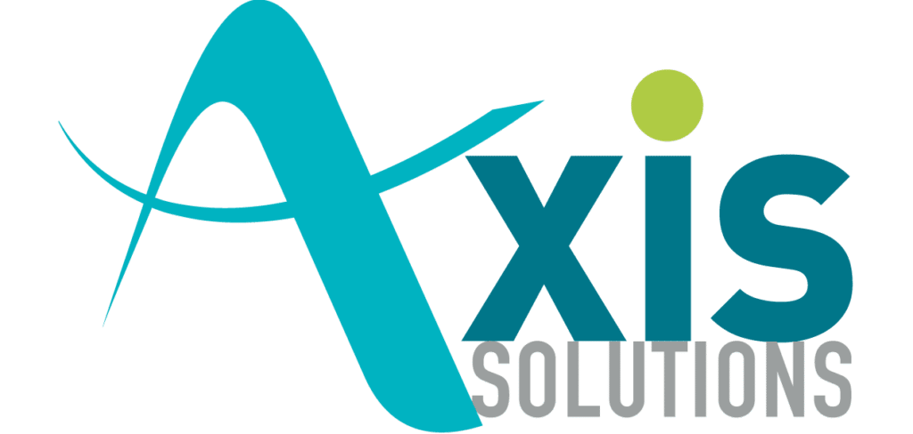
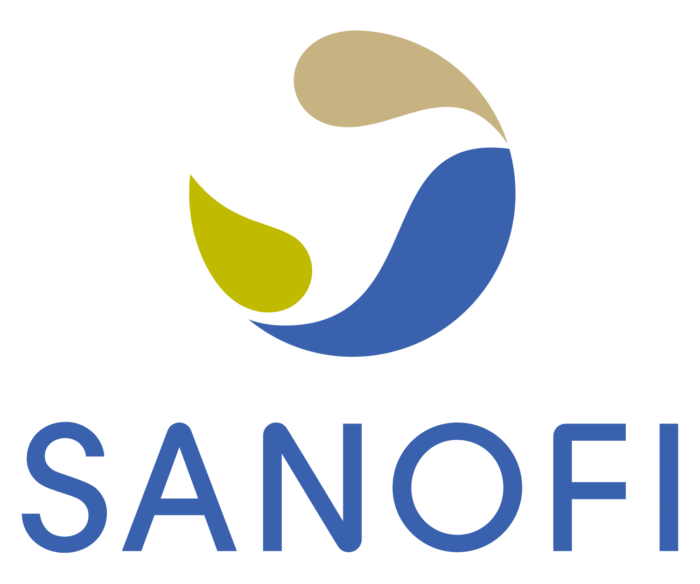

DA SILVA MENDONCA Thomas
Developpeur Web - Alternant - UCA
À Propos
Développeur en Licence Professionnelle : Application Web à l'Université Clermont-Ferrand depuis Septembre 2022
Actuellement Developpeur Web Thélia en Alternance chez OpenStudio à Clermont-Ferrand
Cursus
2022-2023 Licence pro : Application Web à Université Clermont Auvergne(UCA) à Aubiere
2020-2022 BTS SIO (Services Informatiques aux Organisations) au Lycée Albert Londres à Cusset
2019-2020 DUT Informatiques 1ere Année à Université Clermont Auvergne(UCA) à Aubiere
2016-2019 Bac S option Sciences de l'Ingenieur (SI) au Lycée Jean Zay
Mes Compétences
Dans le cadre de mes projets professionels, j'ai travaillé les compétences suivantes :
PHP (en travaillant sur des projets professionels en Symfony et Thelia)
WEB (HTML, CSS, Bootstrap)
Java et JavaFX
Python (avec Tkinter)
J'ai aussi développé plusieurs qualités comme :
L'Autonomie
J'ai travaillé en autonomie sur le projets SAP où on me demandé d'integrer des nouvelles technologies dans mon projets comme SASS
Le Travail en équipe
Dans le cadre de ma formation en BTS, j'ai été amené à gerer une équipe pour le developpement d'une application web sous symfony et une autre en JavaFX
La Curiosité
je m'interresse aux nouvelles technologies comme aux I.A. (l'image de profil a été gener par Midjourney)
Compétences Languistique :
Niveau d'Anglais : B2
Mes Contributions
Thelia-Module

Stage de 2e Année de BTS chez OpenStudio

Création de module Thelia en version 2.5
Mise à jour des modules Thélia en Version 2.5
Passage de version de Site et Compatibilité en version 2.5
Technologies : Thelia, PHP/Symfony, Twig, PropelSQL, Thelia, Javascript,
GitHub des modules mis à jour : depot Github Module
SAP

Stage de 1e Année de BTS chez Axis Solutions
Client : Sanofy

Création d'une application web from Scratch sous Symfony
L'application gère des demandes entre les Demandeurs et les Carristes
Technologies : PHP/Symfony, HTML/CSS, Twig, Bootstrap, Doctrine ORM, SASS, Graph.js
GitHub du projet : depot Github SAP